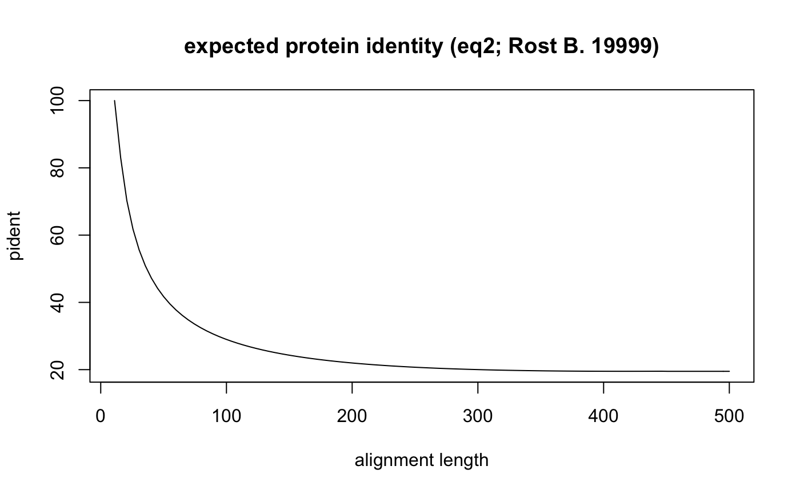

vignettes/dNdSClusteringVignette.Rmd
dNdSClusteringVignette.RmdCRBHits is a reimplementation of the Conditional Reciprocal Best Hit algorithm crb-blast in R.
see here for the R package pages and a detailed description of the install process https://mpievolbio-it.pages.gwdg.de/crbhits/
#see a detailed description of installation prerequisites at
#https://mpievolbio-it.pages.gwdg.de/crbhits/
library(devtools)
#from gitlab
install_gitlab("mpievolbio-it/crbhits", host = "https://gitlab.gwdg.de",
build_vignettes = TRUE, dependencies = FALSE)
#from github
install_github("kullrich/CRBHits", build_vignettes = TRUE, dependencies = FALSE)CRBHits needs LAST and KaKs_Calculator2.0 to be installed before one can eficiently use it.
Both prerequisites (LAST, KaKs_Calculator2.0) are forked within CRBHits and can be compiled for Linux/Unix/macOS wiht the functions make.last() and make.KaKs_Calculator2().
library(CRBHits)
#compile last-1060
make.last()
#compile KaKs_Calculator2.0
make.KaKs_Calculator2()To calculate conditional reciprocal best hit pairs between two species, one can directly use an URL to access the coding sequences and calculate the conditional reciprocal best hit pair matrix (crbh).
As an example, here the coding sequences from Arabidopsis thaliana and Arabidopsis lyrata are used as input sequences from the FTP server from EnsemblPlants.
The release-47 is used.
library(CRBHits)
ensemblPlants <- "ftp://ftp.ensemblgenomes.org/pub/plants/release-47/fasta/"
athfile <- "arabidopsis_thaliana/cds/Arabidopsis_thaliana.TAIR10.cds.all.fa.gz"
alyfile <- "arabidopsis_lyrata/cds/Arabidopsis_lyrata.v.1.0.cds.all.fa.gz"The blast-like software LAST is used to compare the translated coding sequences against each other and output a blast-like output table including the query and target length.
Taking the length of the obtained pairwise protein alignment one can calculate for each hit pair the query coverage as \(\frac{alignment length}{query length}\).
The data will be filtered with a query coverage of 50% (cdsfile2rbh(..., qcov = 0.5)).
Next to query coverage, the hit pairs will be additionally filtered for the twilight zone of protein sequence alignments according to Rost B. (1999) (cdsfile2rbh(..., rost1999 = TRUE)).
The implemented filter uses equation2 of Rost B. (1999)
\[f(x_{\text{hit pair}}) = \cases {100 \text{ , for } L_{\text{hit pair}} < 11 \\ 480 * L^{-0.32 * (1 + e^{\frac{-L}{1000}})} \text{ , for } L_{\text{hit pair}} <= 450 \\ 19.5 \text{ , for } L_{\text{hit pair}} > 450}\] , where \(x_{\text{hit pair}}\) is the expected protein identity given the alignemnet length \(L_{\text{hit pair}}\). If the actual \(pident_{\text{hit pair}} >= f(x_{\text{hit pair}})\) the hit pair is retained.
#plot expected pident by alignment length using eq2 from Rost (1999) get_pident_by_length <- function(x){ eq2 <- function(L){ if(L <= 11){return(100)} if(L <= 450){return(480*(L^(-0.32*(1+(exp(-L/1000))))))} if(L > 450){return(19.5)} } return(unlist(lapply(x, eq2))) } curve(get_pident_by_length, 11, 500, pch = 20, xlab = "alignment length", ylab = "pident", main = "expected protein identity (eq2; Rost B. 1999)")

The conditional reciprocal best hit pairs can be generated with the function cdsfile2rbh using multiple threads.
ath_aly_crbh <- cdsfile2rbh(paste0(ensemblPlants,athfile), paste0(ensemblPlants,alyfile),
qcov = 0.5, rost1999 = TRUE, threads = 8, plotCurve = TRUE)model = “Li”
cds1 <- Biostrings::readDNAStringSet(paste0(ensemblPlants,athfile))
cds2 <- Biostrings::readDNAStringSet(paste0(ensemblPlants,alyfile))
ath_aly_crbh.kaks.Li <- rbh2kaks(ath_aly_crbh$crbh.pairs, cds1, cds2, model = "Li",
threads = 8)In some cases the dNdS calculation fails, since e.g. there are no synonymous or nonsynonymous substitutions between cds1 and cds2 or one wants to get rid of high dS values due to substitution saturation. One can easily remove these cases before doing further analysis.
library(magrittr)
#remove all values that are negative for either ka or ks
ath_aly_crbh.kaks.Li.red <- ath_aly_crbh.kaks.Li %>%
subset(ka != 9.999999) %>% subset(ks != 9.999999)model = “YN”
ath_aly_crbh.kaks.YN <- rbh2kaks(ath_aly_crbh$crbh.pairs, cds1, cds2, model = "YN",
threads = 8)Aubry S., Kelly S., Kümpers B. M., Smith-Unna R. D., and Hibberd J. M. (2014). Deep evolutionary comparison of gene expression identifies parallel recruitment of trans-factors in two independent origins of C4 photosynthesis. PLoS genetics, 10(6). https://doi.org/10.1371/journal.pgen.1004365
Charif D., and Lobry J. R. (2007). SeqinR 1.0-2: a contributed package to the R project for statistical computing devoted to biological sequences retrieval and analysis. In Structural approaches to sequence evolution (pp. 207-232). Springer, Berlin, Heidelberg. https://link.springer.com/chapter/10.1007/978-3-540-35306-5_10
Kiełbasa S. M., Wan R., Sato K., Horton P., and Frith M. C. (2011). Adaptive seeds tame genomic sequence comparison. Genome research, 21(3), 487-493. https://doi.org/10.1101/gr.113985.110
Li W. H. (1993). Unbiased estimation of the rates of synonymous and nonsynonymous substitution. Journal of molecular evolution, 36(1), 96-99. https://doi.org/10.1007/bf02407308
Pagès H., Aboyoun P., Gentleman R., and DebRoy S. (2017). Biostrings: Efficient manipulation of biological strings. R package version, 2(0).
Rost B. (1999). Twilight zone of protein sequence alignments. Protein engineering, 12(2), 85-94. https://doi.org/10.1093/protein/12.2.85
Scott C. (2017). shmlast: an improved implementation of conditional reciprocal best hits with LAST and Python. Journal of Open Source Software, 2(9), 142. https://joss.theoj.org/papers/10.21105/joss.00142
Scrucca L., Fop M., Murphy T. B., and Raftery A. E. (2016) mclust 5: clustering, classification and density estimation using Gaussian finite mixture models. The R Journal, 8(1), 289-317. https://www.ncbi.nlm.nih.gov/pmc/articles/PMC5096736/
Duong T., and Wand M. (2015). feature: Local Inferential Feature Significance for Multivariate Kernel Density Estimation. R package version 1.2.13. https://cran.r-project.org/web/packages/feature/
Yang Z., and Nielsen R. (2000). Estimating synonymous and nonsynonymous substitution rates under realistic evolutionary models. Molecular biology and evolution, 17(1), 32-43. https://doi.org/10.1093/oxfordjournals.molbev.a026236